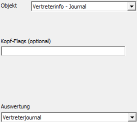
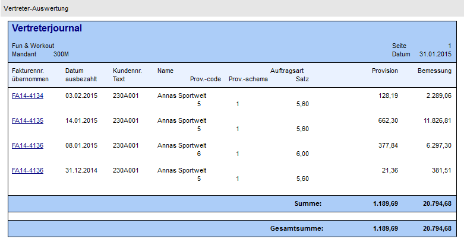

Mit Hilfe des Objekts "Vertreterinfo - Journal" können die Belege eines Vertreters ausgegeben werden. Als Key dient die "Vertreternummer" (d.h. Feld "Text" oder Bereich "View / Var" muss gefüllt sein).
Hinweis
Es handelt sich bei diesem Objekt um eine Information aus der Vertreterinformation. Für die Darstellung werden die benutzerspezifischen Einstellungen der Vertreterinformation (z.B. "Letzte x") und die entsprechenden Formulare genutzt.

Ø Kopf-Flags (optional)
Bei diesem Objekt werden keine Kopf-Flags unterstützt.
Ø Auswertung
Über die Einstellung "Auswertung" kann definiert werden, wie die Auswertung erfolgen soll. Es stehen die folgenden Varianten zur Verfügung:
ü Vertreterjournal
ü Vertreter - Kontoblatt
ü Fakturenliste (Gesamtumsatz)
ü Fakturenliste (Persönlicher Umsatz)
ü Zahlungsliste (Gesamtumsatz)
ü Zahlungsliste (Persönlicher Umsatz)
ü Offene Zahlungen
ü Provisionsstatistik
Beispiel - Externes Objekt mit dem Typ "Objekt" - Objekt "Vertreterinfo - Journal"
